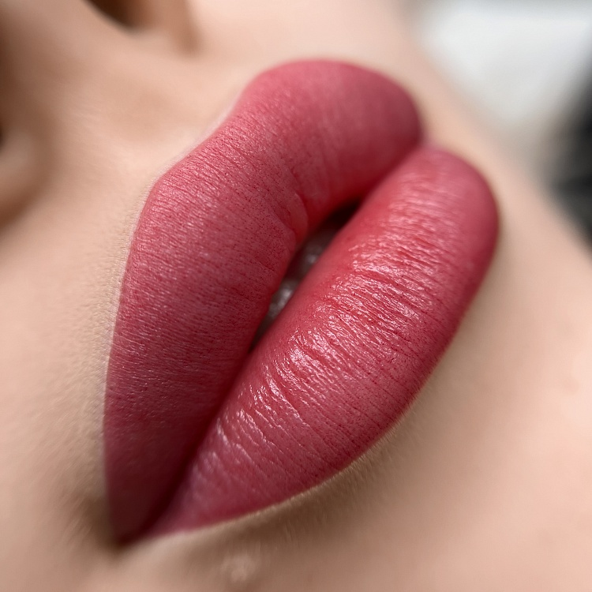
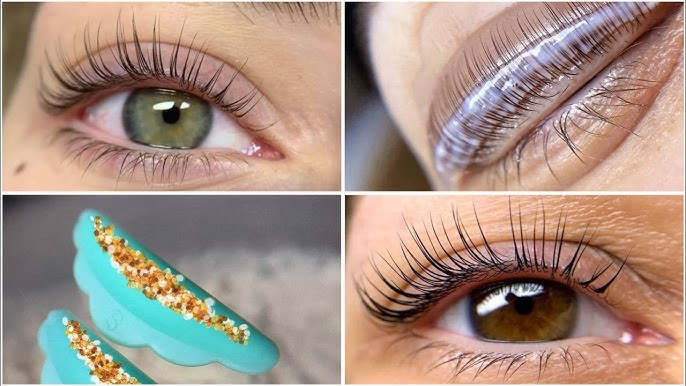
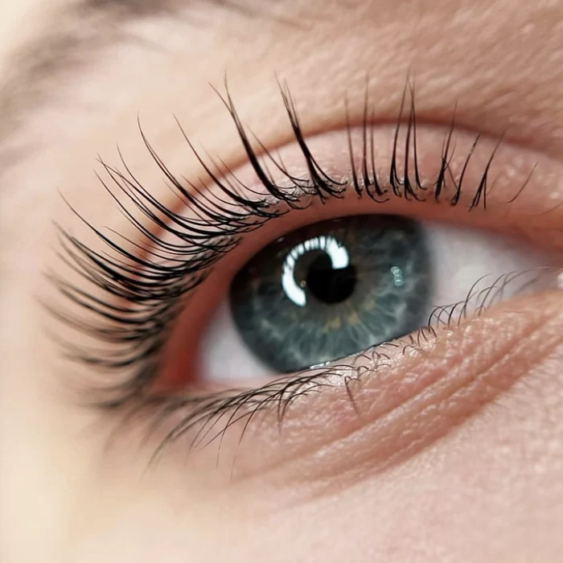
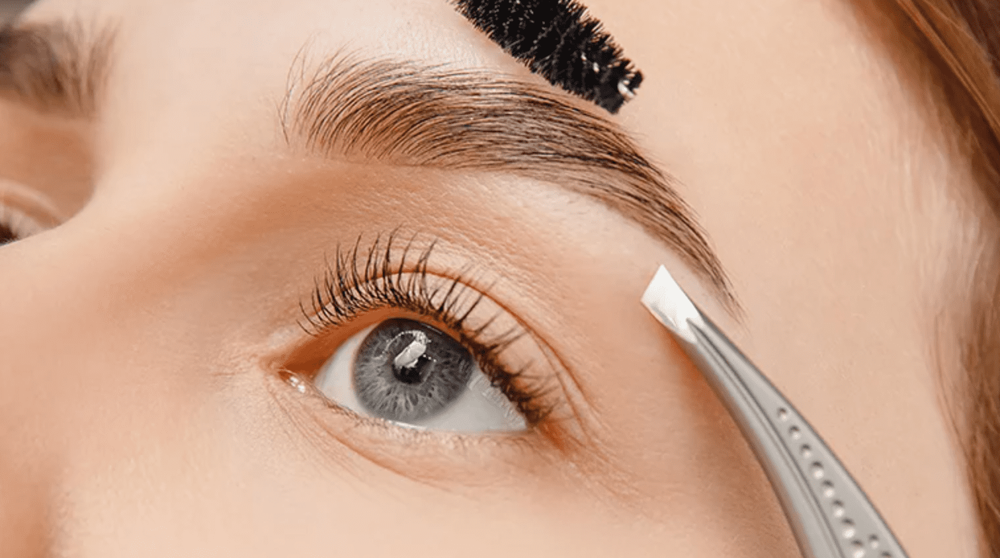
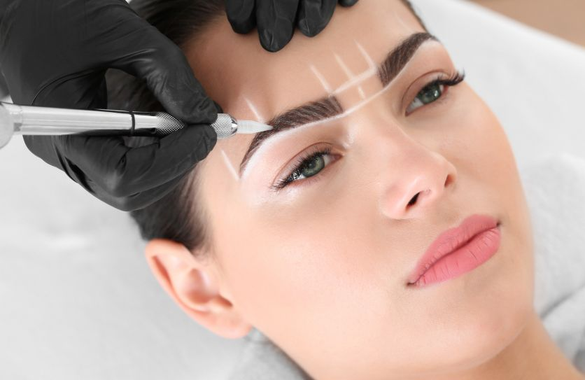
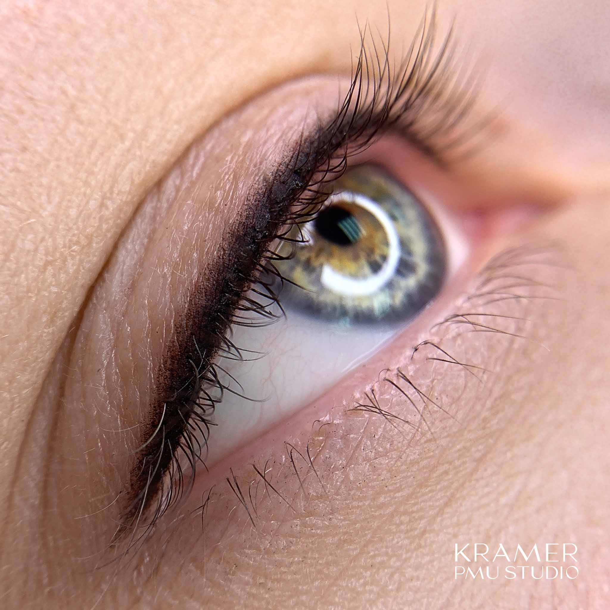

Перманентный макияж губ
Перманентный макияж губ — это бьюти-процедура, при которой с помощью специальной машинки в верхние слои кожи вводится пигмент. Аппарат снабжен тонкими микроиглами, в результате чего боль и неприятные ощущения практически исключаются.
Ламинирование ресниц
Ламинирование ресниц — косметическая процедура, которая придает ресницам густоту и красивый изгиб на несколько недель. После обработки специальным составом они выглядят сильными, объемными и блестящими. Взгляд становится открытым и выразительным.
Окрашивание ресниц
Окрашивание ресниц – популярная салонная процедура. Многие женщины от природы имеют светлые ресницы. Создать выразительный взгляд помогает не только тушь, но и окрашивание стойким красителем. Создав идеальный оттенок ресниц, можно сделать взгляд более выразительным без необходимости в ежедневном подкрашивании.
Окрашивание бровей
Преимущества окрашивания -выразительный и естественный результат, -аккуратные ухоженные брови подчеркивают черты лица, делают образ более эффектным, -стойкость, пигмент медленно вымывается,эффект сохраняется в среднем от трех до шести недель, -широкая палитра оттенков, позволяющая легко подобрать оптимальный цвет, -гипоаллергенность современных профессиональных средств для окрашивания бровей, -мгновенное окрашивание, нет необходимости долго сидеть с краской, волоски быстро впитывают пигмент, -удобство, отпадает необходимость в постоянном макияже бровей.
Перманентный макияж бровей
Процедура, в процессе которой в кожу вводится пигмент - специальный краситель на минеральной основе, разработанный специально для перманентного макияжа. Беспокоиться не о чем - мастер вводит пигмент в самые верхние слои кожи. Глубина - не более 0,8-1 мм. За счет этого и сокращается длительность эффекта. Со временем пигмент постепенно рассасывается, блекнет, а через время и вовсе расщепляется организмом и выводится естественным путем. В результате вы получаете “долгоиграющий” мейкап, умело подчеркивающий достоинства лица..
Перманентный макияж межресничного пространства
Перманентный макияж – отличное решение для женщин, стремящихся выглядеть идеально при любых обстоятельствах. Особенно популярен татуаж межресничного пространства — нет таких сложностей подбора цвета, как с губами и бровями. Универсальная щадящая техника, не вызывающая неприятных ощущений. Подходит под любой образ. И, конечно, стойкость межресничнички выше других видов перманента.
Маникюр

Наращивание/моделирование ногтей — процесс искусственного увеличения длины ногтя с целью исправления дефектов натурального ногтя (расслаивание, слабость и ломкость ногтевой пластины и т. п.).